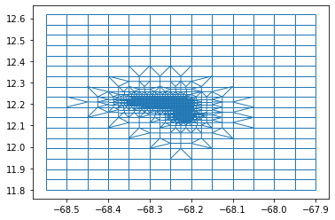

Mesh2d refine based on gridded samples with a costline
import matplotlib.pyplot as plt
plt.close("all")
import xarray as xr
import numpy as np
import meshkernel
import contextily as ctx
from meshkernel import (
MakeGridParameters,
MeshKernel,
GriddedSamples,
ProjectionType,
MeshRefinementParameters,
RefinementType,
)
mk_version = meshkernel.__version__
Sampled bathymetry
# Sampled GEBCO bathymetry
lon_np = np.array(
[
-68.54791667,
-68.46458333,
-68.38125,
-68.29791667,
-68.21458333,
-68.13125,
-68.04791667,
-67.96458333,
]
)
lat_np = np.array(
[
11.80208333,
11.88541667,
11.96875,
12.05208333,
12.13541667,
12.21875,
12.30208333,
12.38541667,
12.46875,
12.55208333,
]
)
values_np_2d = np.array(
[
[-1700, -1769, -1688, -1641, -1526, -1291, -1121, -1537],
[-1561, -1674, -1354, -757, -837, -838, -1080, -1466],
[-1630, -1390, -710, -562, -479, -753, -1246, -1703],
[-1553, -1446, -1147, -248, -175, -712, -1621, -1920],
[-1503, -1380, -1080, -305, 18, -543, -1563, -2241],
[-1477, -1571, -3, 100, 11, -891, -1521, -2446],
[-1892, -1808, 16, -3102, -2015, -1302, -1484, -2581],
[-2516, -2091, -1957, -2647, -1422, -1486, -2340, -2702],
[-2689, -2353, -2614, -3612, -3058, -3017, -3181, -2848],
[-3110, -3025, -3861, -3927, -3818, -4162, -4386, -4504],
]
)
values_np = values_np_2d.flatten().astype(np.float32)
Generate regular grid
lon_min, lon_max, lat_min, lat_max = -68.55, -67.9, 11.8, 12.6
dx = dy = 0.05
make_grid_parameters = MakeGridParameters(
angle=0,
origin_x=lon_min,
origin_y=lat_min,
upper_right_x=lon_max,
upper_right_y=lat_max,
block_size_x=dx,
block_size_y=dy,
)
mk = MeshKernel(projection=ProjectionType(1))
mk.curvilinear_compute_rectangular_grid_on_extension(make_grid_parameters)
mk.curvilinear_convert_to_mesh2d() # convert to ugrid/mesh2d
Perform refinement
gridded_samples = GriddedSamples(
x_coordinates=lon_np, y_coordinates=lat_np, values=values_np
)
mesh_refinement_parameters = MeshRefinementParameters(
min_edge_size=300, # always in meters
refinement_type=RefinementType(1), # Wavecourant/1,
connect_hanging_nodes=True, # set to False to do multiple refinement steps (e.g. for multiple regions)
smoothing_iterations=2,
max_courant_time=120,
)
mk.mesh2d_refine_based_on_gridded_samples(
gridded_samples=gridded_samples,
mesh_refinement_params=mesh_refinement_parameters,
use_nodal_refinement=True,
)
fig, ax = plt.subplots()
mk.mesh2d_get().plot_edges(ax=ax, linewidth=1)
